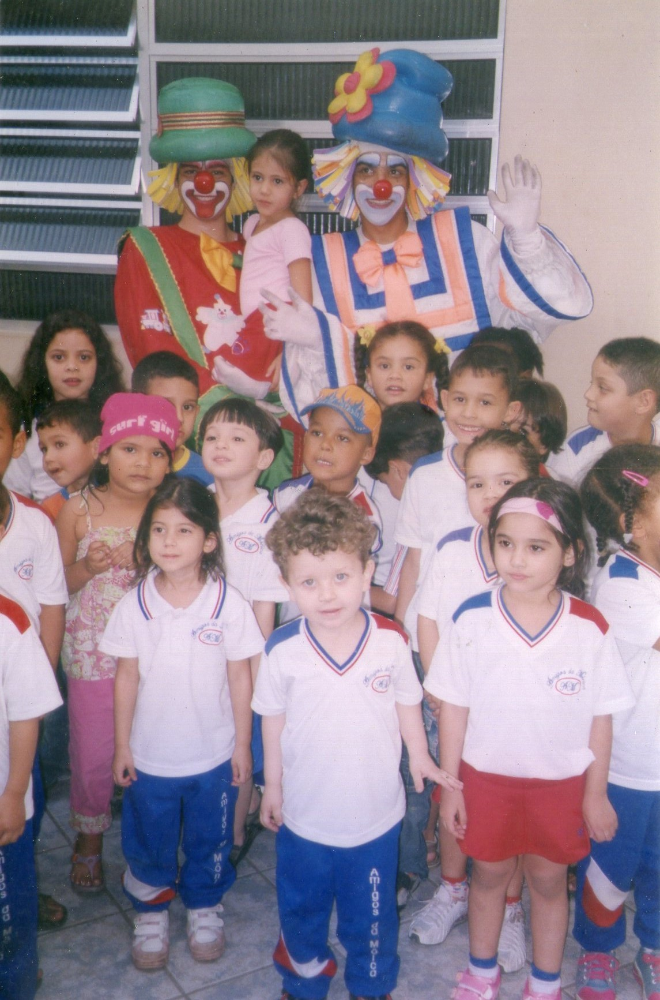
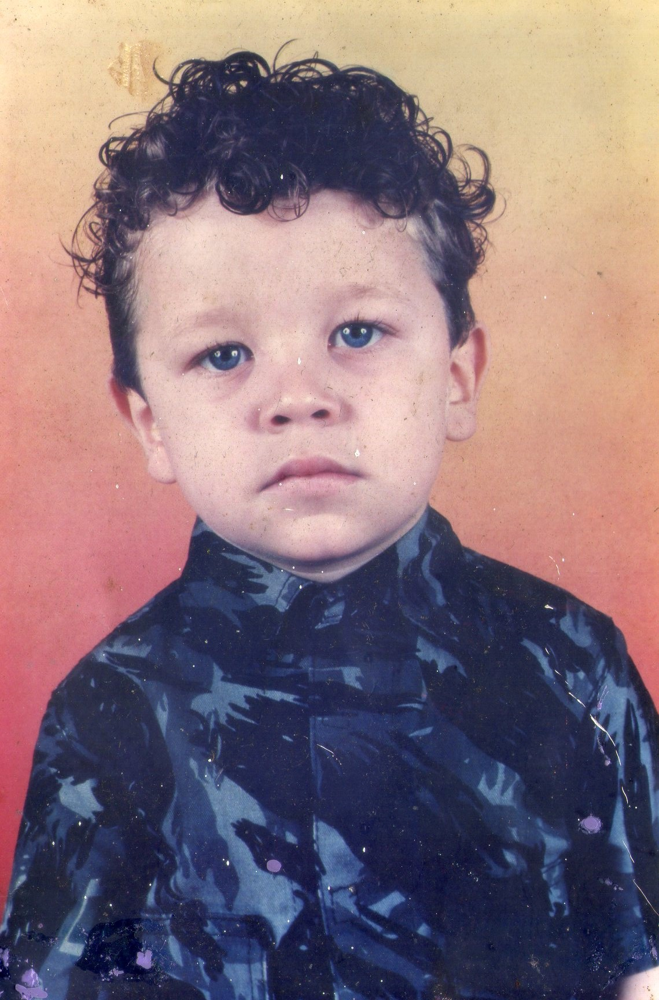
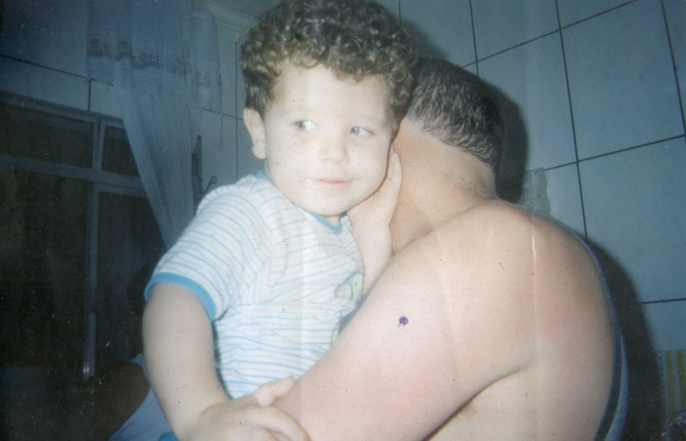
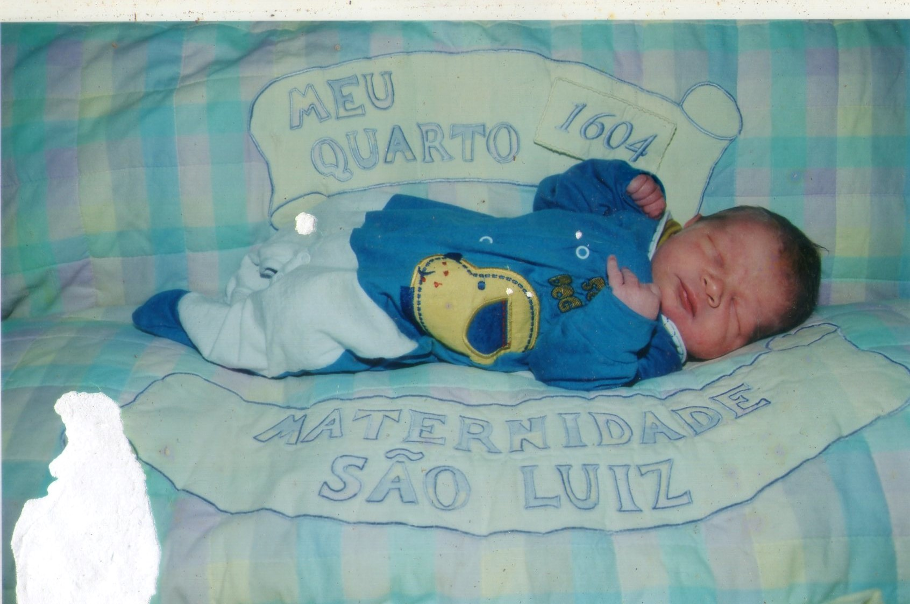

Entre 0 e 5 anos de idade eu era uma criança timida, mas com as pessoas que gosto ficava "ligado no 220" brincando, zoando ,conversando,etc. Eu tambem gostava de joga bola, diferente de hoje, o meu presinho foi no CEU feitiço da vila, era um lugar agradavel que eu me lembro, mas não ensinavam nem o basico, assim precisei fazer ano retrasado.
   